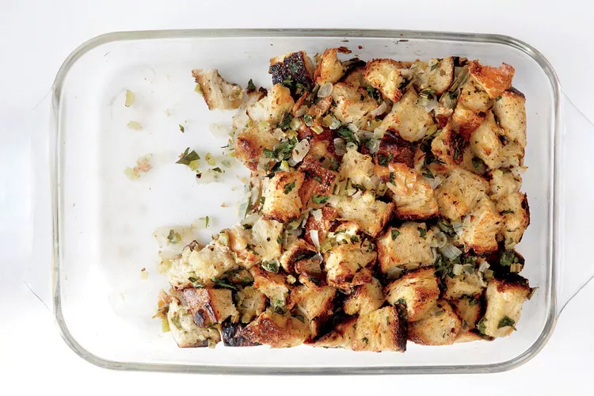

Stuffing

The recipe of Stuffing
Many lovers of stuffing think it's the best part of the Thanksgiving feast, and aren't afraid to admit that it isn't the turkey they look forward to each year. Whether you're learning how to make stuffing for the first time or have made this classic side dish many times before, our recipe will give you the confidence to experiment with new flavor combinations.
Most stuffing has the same foundation: bread. Cornbread comes in as a close second. Once you have the basic formula down, you can try adding different flavor pairings to change up your stuffing. Try adding different vegetables, mushrooms (both fresh and dried will work), fresh or dried fruits, such as apples or dried apricots, and fresh or dried herbs or spices. Even the liquid you use to bind the stuffing can be varied, including stock, water, eggs, or wine. Once you've mastered this basic formula for stuffing, the possibilities really are endless.
Stuffing Ingredients
- 1 loaf white bread (1 pound) or 1 1/2 pounds cornbread
- 4 cups mixed fruit, vegetables, and nuts
- 1 cup fresh herbs, predominantly parsley, sage, and thyme
- 1 pound ground meat or sausage (optional)
- Butter or olive oil
- 4 cups vegetables
- 3 tablespoons herbs
- 2 cups stock or other liquid (or 3 eggs)
Steps
- Prep bread: Cut it into 1/4- to 1/2-inch-thick slices and set out overnight to dry. Break into 1/4-inch cubes once dried out.
- Prep other ingredients: Chop a variety of vegetables and fresh herbs, and set out liquid.
- Sauté the meat: Sauté sausage, pork, or beef until cooked through, and remove from skillet with a slotted spoon.
- Sauté the vegetables: Sauté the chopped vegetables. (We used a mix of celery and onion, which gets cooked in the rendered fat from the meat until they are softened. You can also use butter or olive oil to sauté them.)
- Combine meat, vegetables, fruits, nuts, and bread: Combine the cooked meat with all the vegetables, fruit, nuts, and bread. Toss to combine.
- Season: Add herbs, salt, and pepper. Toss again.
- Add liquid: Add the liquid. Taste and adjust seasoning. If using egg, adjust seasoning first, then decrease any other liquid and add three beaten eggs.
- Stuff the turkey: Stuff turkey just before roasting it. Use 1/2 to 3/4 cup stuffing for each pound of turkey. Don't pack stuffing tightly; it expands as it cooks.